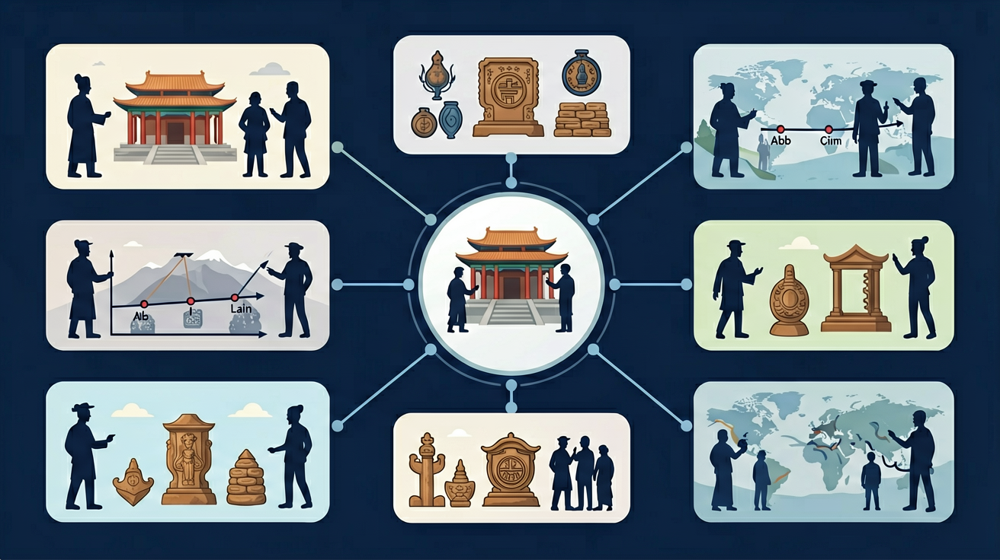

历史选择性必修课程是学生根据个人兴趣、升学需求而选择修习的课程，设《国家制度与社会治理》《经济与社会生活》和《文化交流与传播》三个模块。

🎯 能列举3个古代经济政策对社会结构的影响
🎯 能分析2个经济现象背后的社会阶层变动
🎯 能比较东西方商业发展模式的差异
❓ 为什么古代商人地位低但还能赚大钱？
❓ 课本说小农经济很稳定，那为什么农民还总起义？
❓ 丝绸之路不就是卖东西吗，为啥能影响全世界？
学完这一课，这些问题你都能自信地回答。
北宋交子最早出现在？
明清海禁政策主要针对？
经济史与社会生活是高中历史的重要内容。历史选择性必修课程是学生根据个人兴趣、升学需求而选择修习的课程，设《国家制度与社会治理》《经济与社会生活》和《文化交流与传播》三个模块。
选择性必修课程和选修课程采取专题史方式，旨在让学生从多角度进一步了解人类历史的发展。
点击时代/图层按钮切换地图；悬停边界，点击城市标记查看说明。
把卡片拖到核心概念 / 方法技能 / 应用情境 / 常见误区。
拖完 4 项后自动判分。
经济史关注生产、交换、财政与生活变迁：土地制度、赋役、手工业商业、货币信用、城市化与消费。社会生活史关注衣食住行、家庭宗族、社会群体。二者帮助理解政治变革的深层基础。
问什么在变：所有制？经营方式？市场范围？阶层？用具体朝代例证，并联系政治政策。
常见误区：常见误区是经济史只记“农业发达”空话，缺少制度与数据意识。
研究古代赋役制度改革，主要属于？
1. 比特币矿场选址与工业革命能源逻辑：内蒙古鄂尔多斯某矿场利用当地0.26元/度的弃风电力，重现了18世纪英国工厂傍河建厂的水力利用模式。矿机算力竞争本质是复刻了瓦特蒸汽机对纽科门机热效率（3%到8%）的突破，当前比特币全网算力达200EH/s，相当于全球500强超级计算机算力总和的50倍。
2. 供应链危机中的大萧条经验：2021年美国洛杉矶港拥堵时，马士基航运参考1934年《琼斯-科斯蒂根法案》的农业储备思路，在长滩港建立临时集装箱堆场。现代集装箱标准（TEU）与1933年《农业调整法》的农产品分级制度具有相同的标准化思维，当前全球90%货物仍按1956年麦克莱恩发明的集装箱尺寸运输。
3. 直播电商与宋代市舶司制度：杭州某MCN机构对东南亚跨境直播的25%关税方案，直接参照了南宋绍兴市舶司"抽解（关税）十取其二"的税率设计。现代海关HS编码体系与宋代《庆元条法事类》中记载的乳香、象牙等进口商品分类清单（共197类）具有制度延续性，当前中国跨境电商综试区已达132个。
1. 问题：为什么1929年纽约证交所崩盘时，德国失业率（43%）反而比美国（25%）更高？分析线索：注意1919-1923年德国恶性通胀期间企业债务结构变化，结合《道威斯计划》中美国资本对德国工业的渗透程度。思考国际金本位制下各国经济危机的传导机制，比较1931年奥地利信贷银行倒闭与2008年雷曼兄弟事件的相似性。
2. 问题：明代隆庆开关（1567年）后流入的3亿两白银，为何没有催生中国的工业革命？分析线索：对比同时期西班牙"价格革命"引发的社会结构变革，考察张居正"一条鞭法"的税收白银化对江南手工业的影响。注意18世纪广州十三行贸易规模与英国东印度公司数据的差异，思考白银资本为何流向土地兼并而非机械制造。
经济史研究始于人类如何突破马尔萨斯陷阱（Malthusian Trap）。公元前3000年两河流域的楔形文字泥板记载了最早的复式记账，这种书写系统与古代苏美尔城邦的官僚制度共同催生了税收体系——乌鲁克城神庙遗址出土的啤酒配给清单显示，公元前2500年已出现按劳分配的萌芽。接着地理大发现（Age of Discovery）打破了旧大陆平衡，1571年马尼拉大帆船航线开通后，美洲白银通过菲律宾年输入中国约50吨，引发明代"一条鞭法"的赋税货币化改革，但张居正未能预见这反而强化了小农经济。工业革命的核心不是珍妮纺纱机本身，而是1769年瓦特蒸汽机专利背后的现代产权制度，当英国煤产量从1700年的300万吨飙升至1850年的5000万吨时，铁路债券交易量占伦敦证交所的60%，这种资本与技术结合的模式在1873年维也纳世博会上被德国人称为"系统化创新"。最后凯恩斯主义在大萧条中的实践揭示了经济理论的局限——1933年罗斯福"百日新政"同时推行《格拉斯-斯蒂格尔法案》分业经营和《农业调整法》限产提价，看似矛盾的政策恰恰反映了经济史的本质：任何重大变革都是制度、技术和观念三者的复杂博弈，正如2008年金融危机后比特币的诞生，表面上是对美联储量化宽松的反抗，实则延续了300年来货币演化的历史逻辑。
1. 错误表现：将工业革命（Industrial Revolution）简单等同于机器替代人力。学生常忽略制度变革因素，比如1776年亚当·斯密《国富论》提出的自由市场理论对英国工厂制度的塑造作用。认知根源是技术决定论思维惯性，正确理解应结合英国专利法修订（1624年垄断法）、股份制公司（如东印度公司）和银行信贷体系共同构成的生产关系革命，这才是工业革命持续80年（1760-1840）的根本动力。
2. 错误表现：认为大萧条（Great Depression）期间美国胡佛政府完全奉行自由放任政策。实际上1929-1932年联邦财政支出增长42%，胡佛批准成立复兴金融公司（RFC）注资20亿美元救市。认知根源是教材简化叙述，正确理解要区分古典自由主义与凯恩斯主义的过渡期特征，比如1930年《斯姆特-霍利关税法》提高20000种商品关税，恰恰体现政府强力干预。
3. 错误表现：把中国古代"重农抑商"政策理解为完全禁止商业。事实上宋元时期商税曾占财政收入30%，明代隆庆开关（1567年）后海外白银年均流入200-300吨。认知根源是望文生义，正确理解要把握政策弹性：西汉《平准书》记载官府通过均输平准参与商业，北宋王安石市易法甚至建立官营信贷体系，说明抑制的是威胁统治的大商人而非商业本身。
复制提示词到 AI 学伴，生成「经济史与社会生活」的时间轴或事件提纲；也可以上传你手绘的示意图，请 AI 学伴点评。
复制后可粘贴到 AI 学伴继续对话。
关于'资本主义萌芽'的正确理解是
分析博物馆展出的道光年间账本记载
先独立作答，再点选项查看对错与错因。
徽商在明代迅速崛起的关键原因是
晋商票号衰落的主要外部因素是
下列哪项属于明清商业发展的新现象
明清时期长途贸易的主要支付凭证是____
答案：会票
商帮发明的异地汇兑凭证
广州十三行是清代____贸易的专营机构
答案：对外贸易
特许经营海外贸易的商行
（高考题）唐朝坊市制反映的本质是？
（迁移题）现代电商平台与宋代草市共同点是？
（真题）工业革命对英国社会结构影响最直接表现为？
✅ 实际是限制而非消灭，官营商业仍发达
💡 将政策目标等同于实施效果
✅ 农村集市贸易普遍存在商品交换
💡 混淆理论概念与实际形态
口诀：生产力定基础，生产关系随它舞
类比：经济史像洋葱，剥开层层见真相